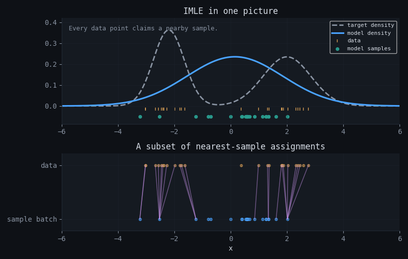
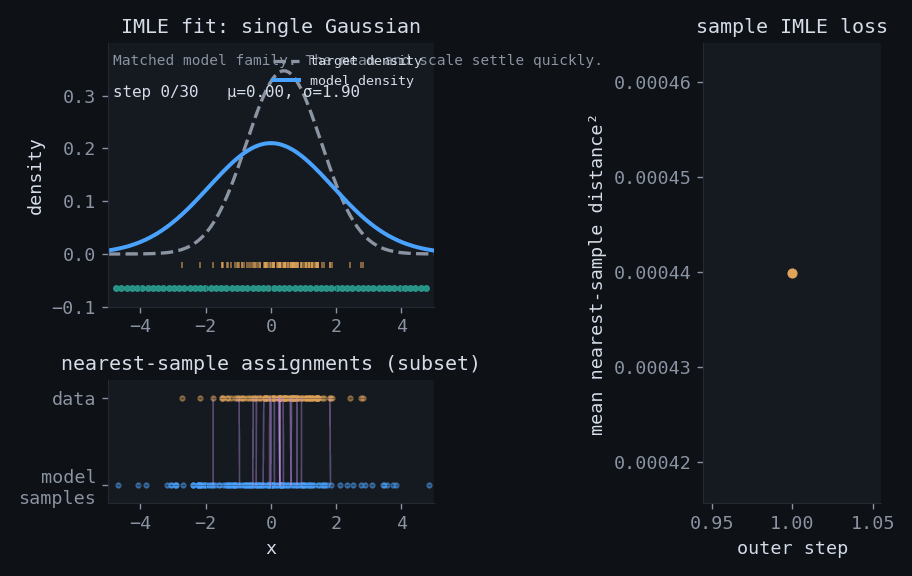
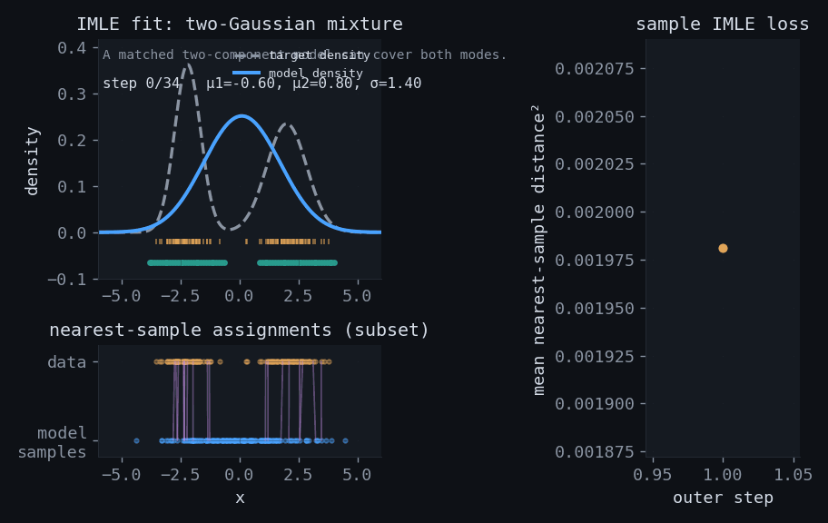
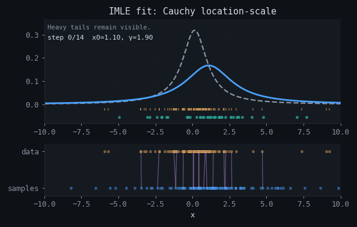
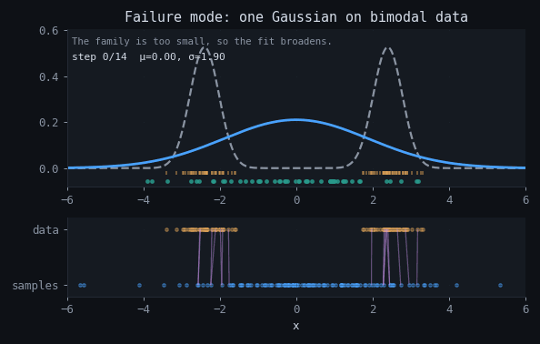
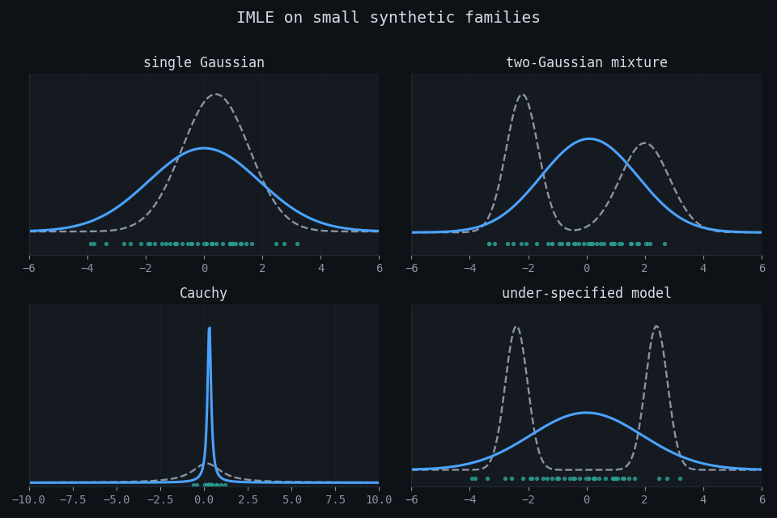

Implicit maximum likelihood estimation (IMLE)
An overview of the objective, algorithm, likelihood connection, and synthetic examples for Gaussian, Gaussian-mixture, Cauchy, and misspecified models.
IMLE trains implicit generative models without requiring a tractable likelihood. It draws samples from the current model, assigns each data point to its nearest sample, and updates the model to reduce those distances.
Because matching runs from data points to model samples, every training example must be covered by at least one generated point. This discourages the generator from concentrating probability mass on only a few modes. The examples below show the assignment geometry and the main failure cases.
1.Why implicit models are hard
The paper studies models of the form $x = T_\theta(z)$ with latent variable $z\sim \mathcal N(0,I)$. This representation supports direct sampling and flexible model classes, but it usually does not provide a closed-form density $p_\theta(x)$ for likelihood optimization.
Training problem: fit a sampler with a likelihood-related objective without evaluating the likelihood itself.
2.Core idea and formulas
Given data $x_1,\dots,x_n$ and i.i.d. model samples $\tilde x_1^\theta,\dots,\tilde x_m^\theta$, define the squared distance from each data point to its nearest sample:
$$R_i^\theta = \min_{j\in[m]} \lVert \tilde x_j^\theta - x_i \rVert_2^2.$$IMLE chooses parameters by minimizing the expected total nearest-sample distance:
$$\hat\theta_{\rm IMLE} = \arg\min_\theta\; \mathbb E\left[\sum_{i=1}^n R_i^\theta\right] = \arg\min_\theta\; \mathbb E\left[\sum_{i=1}^n \min_{j\in[m]} \lVert \tilde x_j^\theta - x_i \rVert_2^2\right].$$Each data point is matched to its nearest model sample.
{kind=link}

3.Algorithm and pseudocode
The algorithm alternates between sampling, nearest-neighbor assignment, and several optimization steps with the assignments held fixed:
Compact pseudocode
input: data {x_i}_i=1^n, implicit sampler x = T_θ(z)
initialize θ
for outer iteration k = 1..K:
draw m i.i.d. samples \tilde x_1^θ, ..., \tilde x_m^θ
choose a data batch S
for each i in S:
σ(i) ← argmin_j ||x_i - \tilde x_j^θ||²
for inner iteration l = 1..L:
choose mini-batch \tilde S ⊆ S
θ ← θ - η ∇_θ [ (n/|\tilde S|) Σ_{i∈\tilde S} ||x_i - \tilde x_{σ(i)}^θ||² ]
return θOptimization properties
IMLE uses a single objective and does not require a learned discriminator. When data and model samples are far apart, nearest-sample distances remain nonzero, so the update can still produce useful gradients.
4.Likelihood intuition
Under the conditions stated in the paper, the IMLE estimator has the same optimum as maximum likelihood. In the one-point case, increasing model density near a data point $x$ makes nearby samples more likely and lowers the expected nearest-sample distance.
$$\mathbb E[\tilde R] = \int_0^\infty \Pr(\tilde R > t)\,dt.$$For a nonnegative random variable, a smaller expected distance indicates that more probability mass lies near the data. The multi-point result requires additional assumptions and a more technical argument.
Likelihood connection: IMLE does not use the log-likelihood gradient. It uses a surrogate objective that shares the maximum-likelihood optimum under the paper’s assumptions.
5.Animated synthetic cases
The dashed curve is the target density, the blue curve is the current model density, and the green marks are a fixed set of model samples. The lower strip shows a subset of nearest-sample assignments at each outer step.





6.Interactive examples
The three widgets display nearest-neighbor assignments, current parameter values, and the effect of sample count in low-dimensional examples.
6.1 Assignment geometry
Interactive geometry demo — needs JavaScript.
6.2 Synthetic trainer
Interactive training demo — needs JavaScript.
6.3 Failure lab
Interactive failure demo — needs JavaScript.
7.Failure modes and caveats
| Issue | Effect | Implication |
|---|---|---|
| Misspecified model | If the family cannot represent the target, IMLE broadens or averages modes within that family. | The model may cover multiple modes while assigning excess probability between them. |
| Too few sampled points | The Monte Carlo support is sparse, so some data points are matched to distant samples. | The objective estimate becomes noisy even when the model family is correct. |
| Distance choice | The method optimizes closeness under the chosen metric. | In images, Euclidean distance may not match perceptual similarity. |
| Nearest-neighbor cost | Large sample sets and repeated searches can dominate runtime. | Approximate nearest-neighbor methods may be needed at scale. |
8.Summary
Companion material: notebook · synthetic artifacts in artifacts/ · widget source in demo/demo.src.js.